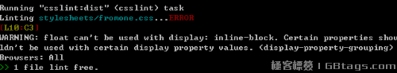

grunt前端打包--css篇
前端打包的工具有很多，我用的习惯的就是这个grunt，无论是你要在github上做开源，还是让自己的项目变得更易于维护，grunt都是首选。
网上的安装教程非常多了，这里就只是介绍一下都有哪些好用的插件。
1：grunt-contrib-less
less,可以让css变得更简单，更易于维护，他可以定义常量，可以转换单位，还可以计算颜色，他用嵌套把我们从重复的排列选择器的漩涡中拯救出来。
所以如果你想成为一个好的前端，或者一个喜欢偷懒的人，那么，less、sass或者jade这些东西尽量涉猎一些，会对效率的提升帮助极大。
grunt-contrib-less很容易，用处就是把less转换成css，只需要注意一下，现在先不要压缩，因为我们还有很多事情要做。
2：grunt-autoprefixer
autoprefixer，他是我近期的发现，看到他我对我从前对付浏览器私有属性的方式感到羞愧。
大家一定对写css的时候的那些浏览器私有属性很恶心了，关键是谁都没有心情去背到底这个属性那个浏览器存在私有前缀，所以 webkit moz ms o 统统都要写上去，一条语句，写了5遍。
那么，有了autoprefixer，我们就不需要再兼顾他们了，或者说，autoprefixer会帮我们把这些做了。
比如我们在less里写：
.test{
transform:rotate(20deg);
transition: 1s;
background-image: linear-gradient(to bottom, #444444, #999999);
}
那么生成的css就是：
.test {
background-image: -webkit-linear-gradient(top, #444, #999);
background-image: linear-gradient(to bottom, #444, #999);
-webkit-transition: 1s;
transition: 1s;
-webkit-transform: rotate(20deg);
-ms-transform: rotate(20deg);
transform: rotate(20deg);
}
这样子的。美观大方。恩恩···
3：grunt-contrib-csslint
csslint ，他会帮我们查出一些语法上的错误，什么？css有什么语法错误。其实也不算是错误，算是一些不规范的写法吧。
比如说我写了：display:inline-block;float:left;
那么他就会报错给你说：

不过他需要一个.csslintrc的配置文件，这个网上都有，可以自己扩充或删减，因为有的错误，是没必要的。
4：grunt-csscomb
csscomb，他可以把你写的css按照最优的顺序排出来，便于阅读，而且也很规范，别人看到了这样的css文件会特别的舒服。
比如我写了这样一堆乱七八糟的东西：···
.a{
position:absolute;width:100px;float:left;height:100px;display:block;top:20px;font-size:12px;line-height:20px;margin-top:30px;padding-left:10px;
transform:rotate(20deg);
}
那么他会帮我编译成:
.a {
position: absolute;
top: 20px;
display: block;
float: left;
width: 100px;
height: 100px;
padding-left: 10px;
margin-top: 30px;
font-size: 12px;
line-height: 20px;
-webkit-transform: rotate(20deg);
-ms-transform: rotate(20deg);
transform: rotate(20deg);
}
美美的。
当然他也需要自己的配置文件.csscomb.json
5：grunt-contrib-cssmin
顾名思义，文件压缩。没什么好说的额。
配置方法大家可以网上去找，或者直接去他们的github上看文档，说的都很详细。
以上就是css的grunt配置，合起来用，就能帮你写出优雅的css文件。